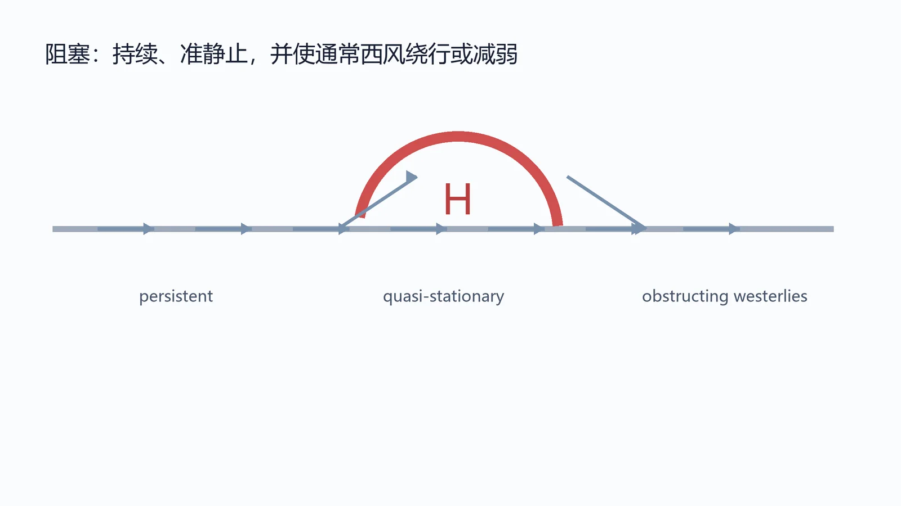

梯度翻转、高度异常与混合判据分别捕捉阻塞的哪些特征？
Ongoing Undergraduate Research
大气阻塞：从识别方法到可比较的研究问题
当前研究重点是基于再分析资料，学习不同类型大气阻塞事件的识别、分类、长期变化及其可能机制。
I am currently building the methodological background for studying atmospheric blocking with reanalysis data. This page describes the questions and detection approaches I am learning; it does not present completed trend results or an independently reproduced blocking dataset.

Background
大气阻塞是中高纬度一种持续时间较长、移动缓慢并显著改变通常西风环流的天气尺度现象。它与极端高温、寒潮、持续降水等事件存在重要联系，但“怎样算作一次阻塞”并没有唯一答案。
不同识别方法可能使用位势高度梯度翻转、位势高度异常、位涡异常或多个特征的组合。方法差异会改变是否识别到事件、事件边界、持续时间以及最终得到的气候统计。
Questions
不同形态或特征组合能否形成稳定、可解释并可复查的类型框架？
不同类型的频率、振幅、范围、持续时间和移动特征是否存在不同变化？
如何避免把统计上的识别特征直接等同于动力学机制？
Methods being learned
位势高度梯度翻转
通过经向位势高度梯度的减弱或翻转识别对通常西风带的阻碍，是经典的阻塞检测思路。
位势高度异常
从气候平均态中识别持续的正高度异常，有助于描述阻塞高压本身，但阈值与背景态处理会影响结果。
混合识别与事件跟踪
将绝对场梯度和异常场结合，并进一步跟踪空间对象，可能同时保留阻塞核心与完整高压范围。
Current boundary
本页只展示研究背景。 当前已完成的是方法文献阅读、概念梳理和研究问题形成；尚不宣称已经独立运行既有阻塞代码、复现论文结果或得到长期趋势结论。
页面未使用出版物原图。公开图像为个人重绘的概念示意，不替代原始论文中的方法与证据。